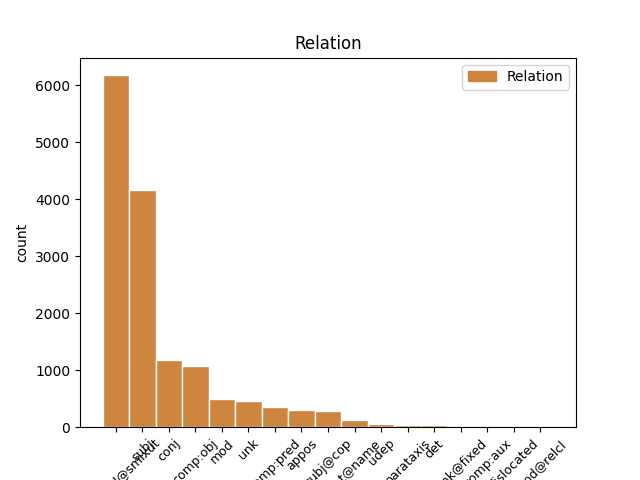
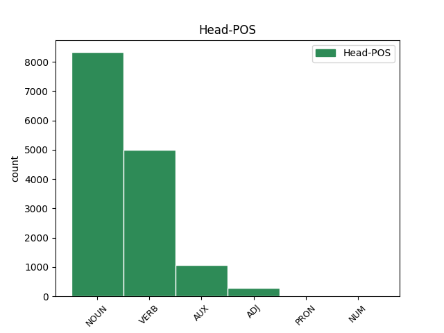
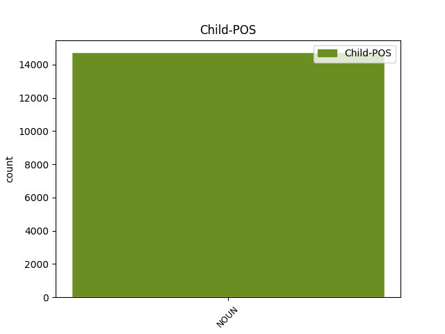

Distribution of features within this leaf



Agreement Rules sorted by frequency.
- When the dependent token is the compound(compound@smixut) of the head token, and the head token is NOUN and the dependent token is NOUN.
1 מ _ _ _ _ 0 _ _ _
2 נגד _ _ _ _ 0 _ _ _
3 ביקשו _ _ _ _ 0 _ _ _
4 ה _ _ _ _ 0 _ _ _
5 אורחים _ _ _ _ 0 _ _ _
6 מ _ _ _ _ 0 _ _ _
7 רמת _ _ _ _ 0 _ _ _
8 גן _ _ _ _ 0 _ _ _
9 לנצל _ _ _ _ 0 _ _ _
10 את _ _ _ _ 0 _ _ _
11 מצב _ _ _ _ 0 _ _ _
12 ה _ _ _ _ 0 _ _ _
13 רוח _ _ _ _ 0 _ _ _
14 ה _ _ _ _ 0 _ _ _
15 ירוד _ _ _ _ 0 _ _ _
16 של _ _ _ _ 0 _ _ _
17 ה _ _ _ _ 0 _ _ _
18 מדומיים _ _ _ _ 0 _ _ _
19 ו _ _ _ _ 0 _ _ _
20 לזכות _ _ _ _ 0 _ _ _
21 ב _ _ _ _ 0 _ _ _
22 ניצחון ניצחון NOUN NOUN Definite=Cons|Gender=Masc|Number=Sing 0 _ _ _
23 חוץ חוץ NOUN NOUN Gender=Masc|Number=Sing 22 compound@smixut _ _
24 נוסף _ _ _ _ 0 _ _ _
25 . _ _ _ _ 0 _ _ _
1 ל _ _ _ _ 0 _ _ _
2 גליל _ _ _ _ 0 _ _ _
3 לא _ _ _ _ 0 _ _ _
4 היתה _ VERB VERB Gender=Fem|HebExistential=True|Number=Sing|Person=3|Polarity=Pos|Tense=Past 0 _ _ _
5 תשובה תשובה NOUN NOUN Gender=Fem|Number=Sing 4 subj _ _
6 ל _ _ _ _ 0 _ _ _
7 ה_ _ _ _ _ 0 _ _ _
8 יכולת _ _ _ _ 0 _ _ _
9 ה _ _ _ _ 0 _ _ _
10 אישית _ _ _ _ 0 _ _ _
11 ה _ _ _ _ 0 _ _ _
12 גבוהה _ _ _ _ 0 _ _ _
13 של _ _ _ _ 0 _ _ _
14 פירסון _ _ _ _ 0 _ _ _
15 , _ _ _ _ 0 _ _ _
16 ש _ _ _ _ 0 _ _ _
17 קלע _ _ _ _ 0 _ _ _
18 33 _ _ _ _ 0 _ _ _
19 נקודות _ _ _ _ 0 _ _ _
20 ו _ _ _ _ 0 _ _ _
21 ריכז _ _ _ _ 0 _ _ _
22 את _ _ _ _ 0 _ _ _
23 משחק _ _ _ _ 0 _ _ _
24 קבוצה_ _ _ _ _ 0 _ _ _
25 _של_ _ _ _ _ 0 _ _ _
26 _הוא _ _ _ _ 0 _ _ _
27 במשך _ _ _ _ 0 _ _ _
28 דקות _ _ _ _ 0 _ _ _
29 רבות _ _ _ _ 0 _ _ _
30 . _ _ _ _ 0 _ _ _
1 6 _ _ _ _ 0 _ _ _
2 נקודות נקודה NOUN NOUN Gender=Fem|Number=Plur 0 _ _ _
3 רצופות _ _ _ _ 0 _ _ _
4 של _ _ _ _ 0 _ _ _
5 זלוטיקמן _ _ _ _ 0 _ _ _
6 בתוך _ _ _ _ 0 _ _ _
7 דקה _ _ _ _ 0 _ _ _
8 , _ _ _ _ 0 _ _ _
9 ב _ _ _ _ 0 _ _ _
10 תוספת _ _ _ _ 0 _ _ _
11 קליעות _ _ _ _ 0 _ _ _
12 מדוייקות _ _ _ _ 0 _ _ _
13 של _ _ _ _ 0 _ _ _
14 בנקס _ _ _ _ 0 _ _ _
15 ו _ _ _ _ 0 _ _ _
16 ספנסר _ _ _ _ 0 _ _ _
17 , _ _ _ _ 0 _ _ _
18 ו _ _ _ _ 0 _ _ _
19 הצגה הצגה NOUN NOUN Gender=Fem|Number=Sing 2 conj _ _
20 פרטית _ _ _ _ 0 _ _ _
21 של _ _ _ _ 0 _ _ _
22 ברקוביץ _ _ _ _ 0 _ _ _
23 ( _ _ _ _ 0 _ _ _
24 22 _ _ _ _ 0 _ _ _
25 נקודות _ _ _ _ 0 _ _ _
26 ב _ _ _ _ 0 _ _ _
27 ה_ _ _ _ _ 0 _ _ _
28 מחצית _ _ _ _ 0 _ _ _
29 ה _ _ _ _ 0 _ _ _
30 שניה _ _ _ _ 0 _ _ _
31 ) _ _ _ _ 0 _ _ _
32 יצרו _ _ _ _ 0 _ _ _
33 את _ _ _ _ 0 _ _ _
34 ה _ _ _ _ 0 _ _ _
35 פער _ _ _ _ 0 _ _ _
36 ה _ _ _ _ 0 _ _ _
37 מבטיח _ _ _ _ 0 _ _ _
38 ש _ _ _ _ 0 _ _ _
39 צמח _ _ _ _ 0 _ _ _
40 עד _ _ _ _ 0 _ _ _
41 ל _ _ _ _ 0 _ _ _
42 ה_ _ _ _ _ 0 _ _ _
43 סיום _ _ _ _ 0 _ _ _
44 . _ _ _ _ 0 _ _ _
1 עם _ _ _ _ 0 _ _ _
2 תחילת _ _ _ _ 0 _ _ _
3 ה _ _ _ _ 0 _ _ _
4 משחק _ _ _ _ 0 _ _ _
5 לא _ _ _ _ 0 _ _ _
6 הותיר הותיר VERB VERB Gender=Masc|HebBinyan=HIFIL|Number=Sing|Person=3|Tense=Past|Voice=Act 0 _ _ _
7 ה _ _ _ _ 0 _ _ _
8 גליל _ _ _ _ 0 _ _ _
9 ספק ספק NOUN NOUN Gender=Masc|Number=Sing 6 comp:obj _ _
10 באשר _ _ _ _ 0 _ _ _
11 ל _ _ _ _ 0 _ _ _
12 כוונה_ _ _ _ _ 0 _ _ _
13 _של_ _ _ _ _ 0 _ _ _
14 _הוא _ _ _ _ 0 _ _ _
15 . _ _ _ _ 0 _ _ _
1 כאשר _ _ _ _ 0 _ _ _
2 ה _ _ _ _ 0 _ _ _
3 פועל פועל NOUN NOUN Gender=Masc|Number=Sing 0 _ _ _
4 תל תל NOUN NOUN Definite=Cons|Gender=Masc|Number=Sing 3 mod _ _
5 אביב _ _ _ _ 0 _ _ _
6 משחק _ _ _ _ 0 _ _ _
7 ב _ _ _ _ 0 _ _ _
8 חמישיה _ _ _ _ 0 _ _ _
9 ה _ _ _ _ 0 _ _ _
10 כוללת _ _ _ _ 0 _ _ _
11 ארבעה _ _ _ _ 0 _ _ _
12 שחומי _ _ _ _ 0 _ _ _
13 עור _ _ _ _ 0 _ _ _
14 אמריקאים _ _ _ _ 0 _ _ _
15 פלוס _ _ _ _ 0 _ _ _
16 עמוס _ _ _ _ 0 _ _ _
17 פרישמן _ _ _ _ 0 _ _ _
18 זה _ _ _ _ 0 _ _ _
19 בשבילי _ _ _ _ 0 _ _ _
20 _אני _ _ _ _ 0 _ _ _
21 סאברס _ _ _ _ 0 _ _ _
22 . _ _ _ _ 0 _ _ _
1 ב _ _ _ _ 0 _ _ _
2 ה_ _ _ _ _ 0 _ _ _
3 דקות _ _ _ _ 0 _ _ _
4 ה _ _ _ _ 0 _ _ _
5 אחרונות _ _ _ _ 0 _ _ _
6 , _ _ _ _ 0 _ _ _
7 כש _ _ _ _ 0 _ _ _
8 ה _ _ _ _ 0 _ _ _
9 ניצחון ניצחון NOUN NOUN Gender=Masc|Number=Sing 11 subj _ _
10 לא _ _ _ _ 0 _ _ _
11 היה _ AUX AUX Gender=Masc|Number=Sing|Person=3|Polarity=Pos|Tense=Past|VerbType=Cop 0 _ _ _
12 ניתן _ _ _ _ 0 _ _ _
13 ל _ _ _ _ 0 _ _ _
14 עירעור _ _ _ _ 0 _ _ _
15 , _ _ _ _ 0 _ _ _
16 החלה _ _ _ _ 0 _ _ _
17 ראשל"ץ _ _ _ _ 0 _ _ _
18 ב _ _ _ _ 0 _ _ _
19 משחק _ _ _ _ 0 _ _ _
20 וירטואוזי _ _ _ _ 0 _ _ _
21 ב _ _ _ _ 0 _ _ _
22 הנהגה_ _ _ _ _ 0 _ _ _
23 _של_ _ _ _ _ 0 _ _ _
24 _הוא _ _ _ _ 0 _ _ _
25 של _ _ _ _ 0 _ _ _
26 ספנסר _ _ _ _ 0 _ _ _
27 , _ _ _ _ 0 _ _ _
28 ש _ _ _ _ 0 _ _ _
29 הסב _ _ _ _ 0 _ _ _
30 הנאה _ _ _ _ 0 _ _ _
31 ל _ _ _ _ 0 _ _ _
32 קהל _ _ _ _ 0 _ _ _
33 ה _ _ _ _ 0 _ _ _
34 צופים _ _ _ _ 0 _ _ _
35 . _ _ _ _ 0 _ _ _
1 ה _ _ _ _ 0 _ _ _
2 אתר אתר NOUN NOUN Gender=Masc|Number=Sing 9 subj@cop _ _
3 ה _ _ _ _ 0 _ _ _
4 עיקרי _ _ _ _ 0 _ _ _
5 ב_ _ _ _ _ 0 _ _ _
6 _הוא _ _ _ _ 0 _ _ _
7 מוצעים _ _ _ _ 0 _ _ _
8 מגרשים _ _ _ _ 0 _ _ _
9 הוא הוא AUX AUX Gender=Masc|Number=Sing|Person=3|Polarity=Pos|VerbForm=Part|VerbType=Cop 0 _ _ _
10 רעות _ _ _ _ 0 _ _ _
11 , _ _ _ _ 0 _ _ _
12 ש _ _ _ _ 0 _ _ _
13 ליד _ _ _ _ 0 _ _ _
14 ה _ _ _ _ 0 _ _ _
15 ישוב _ _ _ _ 0 _ _ _
16 מכבים _ _ _ _ 0 _ _ _
17 . _ _ _ _ 0 _ _ _
1 27 _ _ _ _ 0 _ _ _
2 ב _ _ _ _ 0 _ _ _
3 נובמבר _ _ _ _ 0 _ _ _
4 הוא הוא AUX AUX Gender=Masc|Number=Sing|Person=3|Polarity=Pos|VerbForm=Part|VerbType=Cop 0 _ _ _
5 ה _ _ _ _ 0 _ _ _
6 תאריך תאריך NOUN NOUN Gender=Masc|Number=Sing 4 comp:pred _ _
7 ה _ _ _ _ 0 _ _ _
8 אחרון _ _ _ _ 0 _ _ _
9 ל _ _ _ _ 0 _ _ _
10 החלפת _ _ _ _ 0 _ _ _
11 שחקנים _ _ _ _ 0 _ _ _
12 זרים _ _ _ _ 0 _ _ _
13 ה _ _ _ _ 0 _ _ _
14 ארץ _ _ _ _ 0 _ _ _
15 ו _ _ _ _ 0 _ _ _
16 ב _ _ _ _ 0 _ _ _
17 אירופה _ _ _ _ 0 _ _ _
18 . _ _ _ _ 0 _ _ _
1 6 _ _ _ _ 0 _ _ _
2 נקודות _ _ _ _ 0 _ _ _
3 רצופות _ _ _ _ 0 _ _ _
4 של _ _ _ _ 0 _ _ _
5 זלוטיקמן _ _ _ _ 0 _ _ _
6 בתוך _ _ _ _ 0 _ _ _
7 דקה _ _ _ _ 0 _ _ _
8 , _ _ _ _ 0 _ _ _
9 ב _ _ _ _ 0 _ _ _
10 תוספת _ _ _ _ 0 _ _ _
11 קליעות _ _ _ _ 0 _ _ _
12 מדוייקות _ _ _ _ 0 _ _ _
13 של _ _ _ _ 0 _ _ _
14 בנקס _ _ _ _ 0 _ _ _
15 ו _ _ _ _ 0 _ _ _
16 ספנסר _ _ _ _ 0 _ _ _
17 , _ _ _ _ 0 _ _ _
18 ו _ _ _ _ 0 _ _ _
19 הצגה הצגה NOUN NOUN Gender=Fem|Number=Sing 0 _ _ _
20 פרטית _ _ _ _ 0 _ _ _
21 של _ _ _ _ 0 _ _ _
22 ברקוביץ _ _ _ _ 0 _ _ _
23 ( _ _ _ _ 0 _ _ _
24 22 _ _ _ _ 0 _ _ _
25 נקודות נקודה NOUN NOUN Gender=Fem|Number=Plur 19 appos _ _
26 ב _ _ _ _ 0 _ _ _
27 ה_ _ _ _ _ 0 _ _ _
28 מחצית _ _ _ _ 0 _ _ _
29 ה _ _ _ _ 0 _ _ _
30 שניה _ _ _ _ 0 _ _ _
31 ) _ _ _ _ 0 _ _ _
32 יצרו _ _ _ _ 0 _ _ _
33 את _ _ _ _ 0 _ _ _
34 ה _ _ _ _ 0 _ _ _
35 פער _ _ _ _ 0 _ _ _
36 ה _ _ _ _ 0 _ _ _
37 מבטיח _ _ _ _ 0 _ _ _
38 ש _ _ _ _ 0 _ _ _
39 צמח _ _ _ _ 0 _ _ _
40 עד _ _ _ _ 0 _ _ _
41 ל _ _ _ _ 0 _ _ _
42 ה_ _ _ _ _ 0 _ _ _
43 סיום _ _ _ _ 0 _ _ _
44 . _ _ _ _ 0 _ _ _
1 ב _ _ _ _ 0 _ _ _
2 קיץ _ _ _ _ 0 _ _ _
3 1982 _ _ _ _ 0 _ _ _
4 ניסה _ _ _ _ 0 _ _ _
5 טל _ _ _ _ 0 _ _ _
6 ברודי _ _ _ _ 0 _ _ _
7 ( _ _ _ _ 0 _ _ _
8 אז _ _ _ _ 0 _ _ _
9 עוזר _ _ _ _ 0 _ _ _
10 ה _ _ _ _ 0 _ _ _
11 מאמן _ _ _ _ 0 _ _ _
12 ) _ _ _ _ 0 _ _ _
13 להחתימו _ _ _ _ 0 _ _ _
14 , _ _ _ _ 0 _ _ _
15 אבל _ _ _ _ 0 _ _ _
16 בריאנט _ _ _ _ 0 _ _ _
17 , _ _ _ _ 0 _ _ _
18 ש _ _ _ _ 0 _ _ _
19 סבה_ סבה NOUN NOUN Definite=Def|Gender=Fem|Number=Sing 22 subj _ _
20 _של_ _ _ _ _ 0 _ _ _
21 _הוא _ _ _ _ 0 _ _ _
22 יהודיה יהודי ADJ ADJ Gender=Fem|Number=Sing 0 _ _ _
23 , _ _ _ _ 0 _ _ _
24 חתם _ _ _ _ 0 _ _ _
25 אז _ _ _ _ 0 _ _ _
26 ב _ _ _ _ 0 _ _ _
27 פורד _ _ _ _ 0 _ _ _
28 קאנטו _ _ _ _ 0 _ _ _
29 ו _ _ _ _ 0 _ _ _
30 זכה _ _ _ _ 0 _ _ _
31 עמה _ _ _ _ 0 _ _ _
32 _היא _ _ _ _ 0 _ _ _
33 ב _ _ _ _ 0 _ _ _
34 אותה _ _ _ _ 0 _ _ _
35 עונה _ _ _ _ 0 _ _ _
36 ב _ _ _ _ 0 _ _ _
37 גביע _ _ _ _ 0 _ _ _
38 אירופה _ _ _ _ 0 _ _ _
39 ל _ _ _ _ 0 _ _ _
40 אלופות _ _ _ _ 0 _ _ _
41 . _ _ _ _ 0 _ _ _
1 ה _ _ _ _ 0 _ _ _
2 שינוי שינוי NOUN NOUN Gender=Masc|Number=Sing 3 unk _ _
3 חל חל VERB VERB Gender=Masc|HebBinyan=PAAL|Number=Sing|Person=3|Tense=Past|Voice=Act 0 _ _ _
4 עם _ _ _ _ 0 _ _ _
5 כניסה_ _ _ _ _ 0 _ _ _
6 _של_ _ _ _ _ 0 _ _ _
7 _הוא _ _ _ _ 0 _ _ _
8 של _ _ _ _ 0 _ _ _
9 בוסאני _ _ _ _ 0 _ _ _
10 ב _ _ _ _ 0 _ _ _
11 ה_ _ _ _ _ 0 _ _ _
12 דקה _ _ _ _ 0 _ _ _
13 ה _ _ _ _ 0 _ _ _
14 עשירית _ _ _ _ 0 _ _ _
15 . _ _ _ _ 0 _ _ _
1 ש22חת _ _ _ _ 0 _ _ _
2 איש _ _ _ _ 0 _ _ _
3 ה _ _ _ _ 0 _ _ _
4 עסקים _ _ _ _ 0 _ _ _
5 מיכאל _ _ _ _ 0 _ _ _
6 עקילוב _ _ _ _ 0 _ _ _
7 החל _ _ _ _ 0 _ _ _
8 לנהל _ _ _ _ 0 _ _ _
9 מו"ם _ _ _ _ 0 _ _ _
10 עם _ _ _ _ 0 _ _ _
11 כמה _ _ _ _ 0 _ _ _
12 גורמים _ _ _ _ 0 _ _ _
13 , _ _ _ _ 0 _ _ _
14 ב _ _ _ _ 0 _ _ _
15 מטרה _ _ _ _ 0 _ _ _
16 להשכיר _ _ _ _ 0 _ _ _
17 ל_ _ _ _ _ 0 _ _ _
18 _הם _ _ _ _ 0 _ _ _
19 את _ _ _ _ 0 _ _ _
20 ה _ _ _ _ 0 _ _ _
21 חנות _ _ _ _ 0 _ _ _
22 ב _ _ _ _ 0 _ _ _
23 רחוב _ _ _ _ 0 _ _ _
24 אלנבי _ _ _ _ 0 _ _ _
25 113 _ _ _ _ 0 _ _ _
26 ב _ _ _ _ 0 _ _ _
27 תל תל NOUN NOUN Definite=Cons|Gender=Masc|Number=Sing 0 _ _ _
28 - _ _ _ _ 0 _ _ _
29 אביב אביב NOUN NOUN Gender=Masc|Number=Sing 27 flat@name _ SpaceAfter=No
30 , _ _ _ _ 0 _ _ _
31 ש _ _ _ _ 0 _ _ _
32 שימשה _ _ _ _ 0 _ _ _
33 ב _ _ _ _ 0 _ _ _
34 ה_ _ _ _ _ 0 _ _ _
35 שנתיים _ _ _ _ 0 _ _ _
36 ה _ _ _ _ 0 _ _ _
37 אחרונות _ _ _ _ 0 _ _ _
38 את _ _ _ _ 0 _ _ _
39 רשת _ _ _ _ 0 _ _ _
40 ה _ _ _ _ 0 _ _ _
41 מסעדת _ _ _ _ 0 _ _ _
42 גפריס _ _ _ _ 0 _ _ _
43 , _ _ _ _ 0 _ _ _
44 ו _ _ _ _ 0 _ _ _
45 נסגרה _ _ _ _ 0 _ _ _
46 עקב _ _ _ _ 0 _ _ _
47 קשיים _ _ _ _ 0 _ _ _
48 . _ _ _ _ 0 _ _ _
1 ל _ _ _ _ 0 _ _ _
2 מרות מרות NOUN NOUN Definite=Cons|Gender=Fem|Number=Sing 0 _ _ _
3 ה _ _ _ _ 0 _ _ _
4 אכזבה _ _ _ _ 0 _ _ _
5 מ _ _ _ _ 0 _ _ _
6 כך _ _ _ _ 0 _ _ _
7 שבריאנט _ _ _ _ 0 _ _ _
8 " _ _ _ _ 0 _ _ _
9 ברח _ _ _ _ 0 _ _ _
10 להם _ _ _ _ 0 _ _ _
11 _הם _ _ _ _ 0 _ _ _
12 מ _ _ _ _ 0 _ _ _
13 ה _ _ _ _ 0 _ _ _
14 ידיים יד NOUN NOUN Gender=Fem|HebSource=ConvUncertainHead|Number=Plur 2 unk _ _
15 " _ _ _ _ 0 _ _ _
16 מצפים _ _ _ _ 0 _ _ _
17 השבוע _ _ _ _ 0 _ _ _
18 ב _ _ _ _ 0 _ _ _
19 מכבי _ _ _ _ 0 _ _ _
20 ל _ _ _ _ 0 _ _ _
21 בוא_ _ _ _ _ 0 _ _ _
22 _של_ _ _ _ _ 0 _ _ _
23 _הוא _ _ _ _ 0 _ _ _
24 של _ _ _ _ 0 _ _ _
25 כדורסלן _ _ _ _ 0 _ _ _
26 חיזוק _ _ _ _ 0 _ _ _
27 אחר _ _ _ _ 0 _ _ _
28 ל _ _ _ _ 0 _ _ _
29 מבחנים _ _ _ _ 0 _ _ _
30 . _ _ _ _ 0 _ _ _
1 אין _ _ _ _ 0 _ _ _
2 מנוס _ _ _ _ 0 _ _ _
3 מ _ _ _ _ 0 _ _ _
4 ה _ _ _ _ 0 _ _ _
5 מסקנה _ _ _ _ 0 _ _ _
6 : _ _ _ _ 0 _ _ _
7 מיקי _ _ _ _ 0 _ _ _
8 נשאר _ _ _ _ 0 _ _ _
9 מיקי _ _ _ _ 0 _ _ _
10 אבל _ _ _ _ 0 _ _ _
11 ה _ _ _ _ 0 _ _ _
12 ליגה ליגה NOUN NOUN Gender=Fem|Number=Sing 18 subj _ _
13 ה _ _ _ _ 0 _ _ _
14 זו _ _ _ _ 0 _ _ _
15 כבר _ _ _ _ 0 _ _ _
16 לא _ _ _ _ 0 _ _ _
17 אותה _ _ _ _ 0 _ _ _
18 ליגה ליגה NOUN NOUN Gender=Fem|Number=Sing 0 _ _ _
19 . _ _ _ _ 0 _ _ _
1 ב _ _ _ _ 0 _ _ _
2 סוף _ _ _ _ 0 _ _ _
3 ה _ _ _ _ 0 _ _ _
4 שבוע _ _ _ _ 0 _ _ _
5 הטיל _ _ _ _ 0 _ _ _
6 צה"ל _ _ _ _ 0 _ _ _
7 עוצר _ _ _ _ 0 _ _ _
8 על _ _ _ _ 0 _ _ _
9 ה _ _ _ _ 0 _ _ _
10 כפר _ _ _ _ 0 _ _ _
11 א _ _ _ _ 0 _ _ _
12 - _ _ _ _ 0 _ _ _
13 זאוויה _ _ _ _ 0 _ _ _
14 ב _ _ _ _ 0 _ _ _
15 נפת _ _ _ _ 0 _ _ _
16 גנין _ _ _ _ 0 _ _ _
17 , _ _ _ _ 0 _ _ _
18 לאחר _ _ _ _ 0 _ _ _
19 ש _ _ _ _ 0 _ _ _
20 רעולי _ _ _ _ 0 _ _ _
21 פנים _ _ _ _ 0 _ _ _
22 ניסו _ _ _ _ 0 _ _ _
23 לדקור _ _ _ _ 0 _ _ _
24 את _ _ _ _ 0 _ _ _
25 מוכתר הוכתר VERB VERB Definite=Cons|Gender=Masc|HebBinyan=HUFAL|Number=Sing|Person=1,2,3|VerbForm=Part|Voice=Pass 0 _ _ _
26 ה _ _ _ _ 0 _ _ _
27 כפר כפר NOUN NOUN Gender=Masc|Number=Sing 25 compound@smixut _ _
28 , _ _ _ _ 0 _ _ _
29 ארון _ _ _ _ 0 _ _ _
30 ברקין _ _ _ _ 0 _ _ _
31 , _ _ _ _ 0 _ _ _
32 בן _ _ _ _ 0 _ _ _
33 58 _ _ _ _ 0 _ _ _
34 , _ _ _ _ 0 _ _ _
35 ש _ _ _ _ 0 _ _ _
36 נחשד _ _ _ _ 0 _ _ _
37 ב _ _ _ _ 0 _ _ _
38 שיתוף _ _ _ _ 0 _ _ _
39 פעולה _ _ _ _ 0 _ _ _
40 עם _ _ _ _ 0 _ _ _
41 ישראל _ _ _ _ 0 _ _ _
42 . _ _ _ _ 0 _ _ _
1 ה _ _ _ _ 0 _ _ _
2 אב _ _ _ _ 0 _ _ _
3 , _ _ _ _ 0 _ _ _
4 אריק _ _ _ _ 0 _ _ _
5 , _ _ _ _ 0 _ _ _
6 מהנדס _ _ _ _ 0 _ _ _
7 מכונות _ _ _ _ 0 _ _ _
8 עתיר עתיר ADJ ADJ Definite=Cons|Gender=Masc|Number=Sing 0 _ _ _
9 ניסיון ניסיון NOUN NOUN Gender=Masc|Number=Sing 8 compound@smixut _ SpaceAfter=No
10 ; _ _ _ _ 0 _ _ _
11 ה _ _ _ _ 0 _ _ _
12 אם _ _ _ _ 0 _ _ _
13 , _ _ _ _ 0 _ _ _
14 אידה _ _ _ _ 0 _ _ _
15 , _ _ _ _ 0 _ _ _
16 מתכננת _ _ _ _ 0 _ _ _
17 מחשבים _ _ _ _ 0 _ _ _
18 ; _ _ _ _ 0 _ _ _
19 ה _ _ _ _ 0 _ _ _
20 בן _ _ _ _ 0 _ _ _
21 , _ _ _ _ 0 _ _ _
22 איליה _ _ _ _ 0 _ _ _
23 ( _ _ _ _ 0 _ _ _
24 20 _ _ _ _ 0 _ _ _
25 ) _ _ _ _ 0 _ _ _
26 , _ _ _ _ 0 _ _ _
27 הספיק _ _ _ _ 0 _ _ _
28 ללמוד _ _ _ _ 0 _ _ _
29 שנתיים _ _ _ _ 0 _ _ _
30 מתמטיקה _ _ _ _ 0 _ _ _
31 ב _ _ _ _ 0 _ _ _
32 ה_ _ _ _ _ 0 _ _ _
33 אוניברסיטה _ _ _ _ 0 _ _ _
34 , _ _ _ _ 0 _ _ _
35 ו _ _ _ _ 0 _ _ _
36 אף _ _ _ _ 0 _ _ _
37 השלים _ _ _ _ 0 _ _ _
38 שירות _ _ _ _ 0 _ _ _
39 קצר _ _ _ _ 0 _ _ _
40 ב _ _ _ _ 0 _ _ _
41 ה_ _ _ _ _ 0 _ _ _
42 צבא _ _ _ _ 0 _ _ _
43 ה _ _ _ _ 0 _ _ _
44 אדום _ _ _ _ 0 _ _ _
45 . _ _ _ _ 0 _ _ _
1 ל _ _ _ _ 0 _ _ _
2 טענת _ _ _ _ 0 _ _ _
3 רואי _ _ _ _ 0 _ _ _
4 חשבון _ _ _ _ 0 _ _ _
5 ו _ _ _ _ 0 _ _ _
6 חוקרים _ _ _ _ 0 _ _ _
7 על_ _ _ _ _ 0 _ _ _
8 _הם _ _ _ _ 0 _ _ _
9 מסתמך _ _ _ _ 0 _ _ _
10 ה _ _ _ _ 0 _ _ _
11 עיתון _ _ _ _ 0 _ _ _
12 , _ _ _ _ 0 _ _ _
13 הניבו _ _ _ _ 0 _ _ _
14 רבות רב NOUN NOUN Gender=Fem|Number=Plur 17 det _ _
15 מ _ _ _ _ 0 _ _ _
16 ה _ _ _ _ 0 _ _ _
17 שותפויות שותפות NOUN NOUN Gender=Fem|Number=Plur 0 _ _ _
18 ה _ _ _ _ 0 _ _ _
19 סודיות _ _ _ _ 0 _ _ _
20 של _ _ _ _ 0 _ _ _
21 דרקסל _ _ _ _ 0 _ _ _
22 החזרים _ _ _ _ 0 _ _ _
23 בני _ _ _ _ 0 _ _ _
24 מאות _ _ _ _ 0 _ _ _
25 ו _ _ _ _ 0 _ _ _
26 אף _ _ _ _ 0 _ _ _
27 אלפי _ _ _ _ 0 _ _ _
28 אחוזים _ _ _ _ 0 _ _ _
29 מ _ _ _ _ 0 _ _ _
30 ה _ _ _ _ 0 _ _ _
31 השקעה _ _ _ _ 0 _ _ _
32 ה _ _ _ _ 0 _ _ _
33 מקורית _ _ _ _ 0 _ _ _
34 . _ _ _ _ 0 _ _ _
1 מחצית _ _ _ _ 0 _ _ _
2 ה _ _ _ _ 0 _ _ _
3 אוכלוסייה _ _ _ _ 0 _ _ _
4 ב _ _ _ _ 0 _ _ _
5 טטרסטן _ _ _ _ 0 _ _ _
6 היא _ _ _ _ 0 _ _ _
7 רוסית רוסי ADJ ADJ Gender=Fem|Number=Sing 0 _ _ _
8 תוצאה תוצאה NOUN NOUN Gender=Fem|HebSource=ConvUncertainHead|Number=Sing 7 unk _ _
9 של _ _ _ _ 0 _ _ _
10 מאות _ _ _ _ 0 _ _ _
11 שנות _ _ _ _ 0 _ _ _
12 מלחמה _ _ _ _ 0 _ _ _
13 . _ _ _ _ 0 _ _ _
1 ה _ _ _ _ 0 _ _ _
2 מינהל _ _ _ _ 0 _ _ _
3 יקבל קיבל VERB VERB Gender=Masc|HebBinyan=PIEL|Number=Sing|Person=3|Tense=Fut|Voice=Act 0 _ _ _
4 תמורת _ _ _ _ 0 _ _ _
5 החכרת _ _ _ _ 0 _ _ _
6 מגרש _ _ _ _ 0 _ _ _
7 אחד _ _ _ _ 0 _ _ _
8 316 _ _ _ _ 0 _ _ _
9 אלף _ _ _ _ 0 _ _ _
10 ש"ח _ _ _ _ 0 _ _ _
11 , _ _ _ _ 0 _ _ _
12 ו _ _ _ _ 0 _ _ _
13 תמורת _ _ _ _ 0 _ _ _
14 החכרת _ _ _ _ 0 _ _ _
15 ה _ _ _ _ 0 _ _ _
16 שני _ _ _ _ 0 _ _ _
17 376 _ _ _ _ 0 _ _ _
18 אלף _ _ _ _ 0 _ _ _
19 ש"ח ש"ח NOUN NOUN Abbr=Yes|Gender=Masc|Number=Sing 3 conj _ SpaceAfter=No
20 . _ _ _ _ 0 _ _ _
1 אולי _ _ _ _ 0 _ _ _
2 זה _ _ _ _ 0 _ _ _
3 טוב טוב ADJ ADJ Gender=Masc|Number=Sing 0 _ _ _
4 , _ _ _ _ 0 _ _ _
5 אבל _ _ _ _ 0 _ _ _
6 זה _ _ _ _ 0 _ _ _
7 לא _ _ _ _ 0 _ _ _
8 ה _ _ _ _ 0 _ _ _
9 חיים חיים NOUN NOUN Gender=Masc|Number=Plur 3 conj _ _
10 . _ _ _ _ 0 _ _ _
1 הוא _ _ _ _ 0 _ _ _
2 יכול _ AUX AUX Gender=Masc|Number=Sing|Person=1,2,3|VerbForm=Part|VerbType=Mod 0 _ _ _
3 להיות _ _ _ _ 0 _ _ _
4 ידיד ידיד NOUN NOUN Gender=Masc|Number=Sing 2 udep _ _
5 פוטנציאלי _ _ _ _ 0 _ _ _
6 " _ _ _ _ 0 _ _ _
7 . _ _ _ _ 0 _ _ _
1 ה _ _ _ _ 0 _ _ _
2 מכתב _ _ _ _ 0 _ _ _
3 האשים האשים VERB VERB Gender=Masc|HebBinyan=HIFIL|Number=Sing|Person=3|Tense=Past|Voice=Act 0 _ _ _
4 את _ _ _ _ 0 _ _ _
5 וולסטון _ _ _ _ 0 _ _ _
6 , _ _ _ _ 0 _ _ _
7 כי _ _ _ _ 0 _ _ _
8 הוא _ _ _ _ 0 _ _ _
9 מעולם _ _ _ _ 0 _ _ _
10 לא _ _ _ _ 0 _ _ _
11 התנער _ _ _ _ 0 _ _ _
12 מ _ _ _ _ 0 _ _ _
13 השקפה_ _ _ _ _ 0 _ _ _
14 _של_ _ _ _ _ 0 _ _ _
15 _הוא _ _ _ _ 0 _ _ _
16 של _ _ _ _ 0 _ _ _
17 גקסון _ _ _ _ 0 _ _ _
18 על _ _ _ _ 0 _ _ _
19 ישראל _ _ _ _ 0 _ _ _
20 ו _ _ _ _ 0 _ _ _
21 על _ _ _ _ 0 _ _ _
22 המזה"ת _ _ _ _ 0 _ _ _
23 עניין עניין NOUN NOUN Gender=Masc|Number=Sing 3 parataxis _ _
24 ש _ _ _ _ 0 _ _ _
25 וולסטון _ _ _ _ 0 _ _ _
26 מכחיש _ _ _ _ 0 _ _ _
27 . _ _ _ _ 0 _ _ _
1 אמנם _ _ _ _ 0 _ _ _
2 ה _ _ _ _ 0 _ _ _
3 קיבוץ _ _ _ _ 0 _ _ _
4 אינו _ _ _ _ 0 _ _ _
5 קולחוז קולחוז NOUN NOUN Gender=Masc|Number=Sing 14 udep _ SpaceAfter=No
6 , _ _ _ _ 0 _ _ _
7 אבל _ _ _ _ 0 _ _ _
8 זה _ _ _ _ 0 _ _ _
9 לא _ _ _ _ 0 _ _ _
10 בשביל_ _ _ _ _ 0 _ _ _
11 _הם _ _ _ _ 0 _ _ _
12 , _ _ _ _ 0 _ _ _
13 הם _ _ _ _ 0 _ _ _
14 אומרים אמר VERB VERB Gender=Masc|HebBinyan=PAAL|Number=Plur|Person=1,2,3|VerbForm=Part|Voice=Act 0 _ _ _
15 . _ _ _ _ 0 _ _ _
1 ה _ _ _ _ 0 _ _ _
2 עולים _ _ _ _ 0 _ _ _
3 אמורים אמור AUX AUX Gender=Masc|Number=Plur|Person=1,2,3|VerbType=Mod 0 _ _ _
4 לתת _ _ _ _ 0 _ _ _
5 ל _ _ _ _ 0 _ _ _
6 ה_ _ _ _ _ 0 _ _ _
7 קיבוץ _ _ _ _ 0 _ _ _
8 יום יום NOUN NOUN Definite=Cons|Gender=Masc|Number=Sing 3 comp:obj _ _
9 עבודה _ _ _ _ 0 _ _ _
10 אחד _ _ _ _ 0 _ _ _
11 ב _ _ _ _ 0 _ _ _
12 חודש _ _ _ _ 0 _ _ _
13 . _ _ _ _ 0 _ _ _
1 ב _ _ _ _ 0 _ _ _
2 קרית _ _ _ _ 0 _ _ _
3 - _ _ _ _ 0 _ _ _
4 ארבע _ _ _ _ 0 _ _ _
5 ו _ _ _ _ 0 _ _ _
6 ב _ _ _ _ 0 _ _ _
7 חברון _ _ _ _ 0 _ _ _
8 , _ _ _ _ 0 _ _ _
9 ה _ _ _ _ 0 _ _ _
10 מעוזים מעוז NOUN NOUN Gender=Masc|Number=Plur 32 mod _ _
11 של _ _ _ _ 0 _ _ _
12 ה _ _ _ _ 0 _ _ _
13 תנועה _ _ _ _ 0 _ _ _
14 , _ _ _ _ 0 _ _ _
15 ש _ _ _ _ 0 _ _ _
16 מ _ _ _ _ 0 _ _ _
17 שם _ _ _ _ 0 _ _ _
18 יצאו _ _ _ _ 0 _ _ _
19 ל _ _ _ _ 0 _ _ _
20 פגיעה _ _ _ _ 0 _ _ _
21 ב _ _ _ _ 0 _ _ _
22 ה_ _ _ _ _ 0 _ _ _
23 רכוש _ _ _ _ 0 _ _ _
24 ו _ _ _ _ 0 _ _ _
25 ל _ _ _ _ 0 _ _ _
26 מסע _ _ _ _ 0 _ _ _
27 יריות _ _ _ _ 0 _ _ _
28 ב _ _ _ _ 0 _ _ _
29 ה_ _ _ _ _ 0 _ _ _
30 סביבה _ _ _ _ 0 _ _ _
31 הם _ _ _ _ 0 _ _ _
32 מונים מנה VERB VERB Gender=Masc|Number=Plur|Person=1,2,3|VerbForm=Part 0 _ _ _
33 עשרות _ _ _ _ 0 _ _ _
34 בלבד _ _ _ _ 0 _ _ _
35 . _ _ _ _ 0 _ _ _
1 מהו מה PRON PRON Gender=Masc|Number=Sing|PronType=Int 0 _ _ _
2 תואר תואר NOUN NOUN Gender=Masc|Number=Sing 1 subj _ _
3 אקדמי _ _ _ _ 0 _ _ _
4 ב _ _ _ _ 0 _ _ _
5 ישראל _ _ _ _ 0 _ _ _
6 ? _ _ _ _ 0 _ _ _
1 דבר דבר NOUN NOUN Gender=Masc|Number=Sing 4 unk _ _
2 שני _ _ _ _ 0 _ _ _
3 : _ _ _ _ 0 _ _ _
4 חשוב חשוב AUX AUX Gender=Masc|Number=Sing|Person=1,2,3|VerbType=Mod 0 _ _ _
5 מאוד _ _ _ _ 0 _ _ _
6 ש _ _ _ _ 0 _ _ _
7 שוטרים _ _ _ _ 0 _ _ _
8 ינועו _ _ _ _ 0 _ _ _
9 ב _ _ _ _ 0 _ _ _
10 ה_ _ _ _ _ 0 _ _ _
11 סיורים _ _ _ _ 0 _ _ _
12 רק _ _ _ _ 0 _ _ _
13 ב _ _ _ _ 0 _ _ _
14 צמדים _ _ _ _ 0 _ _ _
15 ו _ _ _ _ 0 _ _ _
16 ב _ _ _ _ 0 _ _ _
17 שלשות _ _ _ _ 0 _ _ _
18 . _ _ _ _ 0 _ _ _
1 ניצחון _ _ _ _ 0 _ _ _
2 וולסטון _ _ _ _ 0 _ _ _
3 היה _ _ _ _ 0 _ _ _
4 ה _ _ _ _ 0 _ _ _
5 סנסאציה _ _ _ _ 0 _ _ _
6 ה _ _ _ _ 0 _ _ _
7 גדולה _ _ _ _ 0 _ _ _
8 ביותר _ _ _ _ 0 _ _ _
9 של _ _ _ _ 0 _ _ _
10 ה _ _ _ _ 0 _ _ _
11 בחירות _ _ _ _ 0 _ _ _
12 ל _ _ _ _ 0 _ _ _
13 ה_ _ _ _ _ 0 _ _ _
14 קונגרס _ _ _ _ 0 _ _ _
15 ב _ _ _ _ 0 _ _ _
16 ארה"ב _ _ _ _ 0 _ _ _
17 , _ _ _ _ 0 _ _ _
18 ו _ _ _ _ 0 _ _ _
19 הוא _ _ _ _ 0 _ _ _
20 הגיח _ _ _ _ 0 _ _ _
21 בן _ _ _ _ 0 _ _ _
22 - _ _ _ _ 0 _ _ _
23 לילה _ _ _ _ 0 _ _ _
24 מ _ _ _ _ 0 _ _ _
25 אלמוניות _ _ _ _ 0 _ _ _
26 אקדמית _ _ _ _ 0 _ _ _
27 אל _ _ _ _ 0 _ _ _
28 עמוד_ _ _ _ _ 0 _ _ _
29 _של_ _ _ _ _ 0 _ _ _
30 _הוא _ _ _ _ 0 _ _ _
31 ה _ _ _ _ 0 _ _ _
32 ראשון _ _ _ _ 0 _ _ _
33 של _ _ _ _ 0 _ _ _
34 " _ _ _ _ 0 _ _ _
35 ניו _ _ _ _ 0 _ _ _
36 יורק _ _ _ _ 0 _ _ _
37 טיימס _ _ _ _ 0 _ _ _
38 " _ _ _ _ 0 _ _ _
39 , _ _ _ _ 0 _ _ _
40 ו _ _ _ _ 0 _ _ _
41 אל _ _ _ _ 0 _ _ _
42 תוכנית _ _ _ _ 0 _ _ _
43 ה _ _ _ _ 0 _ _ _
44 טלוויזיה _ _ _ _ 0 _ _ _
45 רבת רב ADJ ADJ Definite=Cons|Gender=Fem|Number=Sing 0 _ _ _
46 - _ _ _ _ 0 _ _ _
47 ה _ _ _ _ 0 _ _ _
48 יוקרה יוקרה NOUN NOUN Gender=Fem|Number=Sing 45 udep _ _
49 " _ _ _ _ 0 _ _ _
50 נייטליין _ _ _ _ 0 _ _ _
51 " _ _ _ _ 0 _ _ _
52 . _ _ _ _ 0 _ _ _
1 עיראק _ _ _ _ 0 _ _ _
2 יכולה _ _ _ _ 0 _ _ _
3 להתמודד _ _ _ _ 0 _ _ _
4 עם _ _ _ _ 0 _ _ _
5 תשלום _ _ _ _ 0 _ _ _
6 חוב_ _ _ _ _ 0 _ _ _
7 _של_ _ _ _ _ 0 _ _ _
8 _היא _ _ _ _ 0 _ _ _
9 , _ _ _ _ 0 _ _ _
10 ו _ _ _ _ 0 _ _ _
11 סיפוק _ _ _ _ 0 _ _ _
12 צורך_ _ _ _ _ 0 _ _ _
13 _של_ _ _ _ _ 0 _ _ _
14 _היא _ _ _ _ 0 _ _ _
15 היא _ _ _ _ 0 _ _ _
16 , _ _ _ _ 0 _ _ _
17 אך _ _ _ _ 0 _ _ _
18 ו _ _ _ _ 0 _ _ _
19 רק _ _ _ _ 0 _ _ _
20 ב _ _ _ _ 0 _ _ _
21 אחת _ _ _ _ 0 _ _ _
22 מ _ _ _ _ 0 _ _ _
23 ה _ _ _ _ 0 _ _ _
24 אפשרויות _ _ _ _ 0 _ _ _
25 ה _ _ _ _ 0 _ _ _
26 באות _ _ _ _ 0 _ _ _
27 , _ _ _ _ 0 _ _ _
28 או _ _ _ _ 0 _ _ _
29 טוב _ _ _ _ 0 _ _ _
30 יותר _ _ _ _ 0 _ _ _
31 מ _ _ _ _ 0 _ _ _
32 בחינה_ _ _ _ _ 0 _ _ _
33 _של_ _ _ _ _ 0 _ _ _
34 _היא _ _ _ _ 0 _ _ _
35 , _ _ _ _ 0 _ _ _
36 ב _ _ _ _ 0 _ _ _
37 שילוב _ _ _ _ 0 _ _ _
38 מלא _ _ _ _ 0 _ _ _
39 בין_ _ _ _ _ 0 _ _ _
40 _הן הוא PRON PRON Gender=Fem|Number=Plur|Person=3|PronType=Prs 0 _ _ _
41 : _ _ _ _ 0 _ _ _
42 עלייה עלייה NOUN NOUN Gender=Fem|HebSource=ConvUncertainHead|Number=Sing 40 unk _ _
43 של _ _ _ _ 0 _ _ _
44 ממש _ _ _ _ 0 _ _ _
45 ב _ _ _ _ 0 _ _ _
46 מחיר _ _ _ _ 0 _ _ _
47 ה _ _ _ _ 0 _ _ _
48 נפט _ _ _ _ 0 _ _ _
49 ה _ _ _ _ 0 _ _ _
50 גולמי _ _ _ _ 0 _ _ _
51 , _ _ _ _ 0 _ _ _
52 ש _ _ _ _ 0 _ _ _
53 את _ _ _ _ 0 _ _ _
54 מחיר_ _ _ _ _ 0 _ _ _
55 _של_ _ _ _ _ 0 _ _ _
56 _הוא _ _ _ _ 0 _ _ _
57 יצטרך _ _ _ _ 0 _ _ _
58 לשלם _ _ _ _ 0 _ _ _
59 ה _ _ _ _ 0 _ _ _
60 צרכן _ _ _ _ 0 _ _ _
61 ב _ _ _ _ 0 _ _ _
62 ה_ _ _ _ _ 0 _ _ _
63 עולם _ _ _ _ 0 _ _ _
64 כולו _ _ _ _ 0 _ _ _
65 _הוא _ _ _ _ 0 _ _ _
66 ; _ _ _ _ 0 _ _ _
67 עלייה _ _ _ _ 0 _ _ _
68 של _ _ _ _ 0 _ _ _
69 ממש _ _ _ _ 0 _ _ _
70 ב _ _ _ _ 0 _ _ _
71 תפוקת _ _ _ _ 0 _ _ _
72 ה _ _ _ _ 0 _ _ _
73 נפט _ _ _ _ 0 _ _ _
74 של _ _ _ _ 0 _ _ _
75 עיראק _ _ _ _ 0 _ _ _
76 , _ _ _ _ 0 _ _ _
77 לצד _ _ _ _ 0 _ _ _
78 הרחבת _ _ _ _ 0 _ _ _
79 מקורות _ _ _ _ 0 _ _ _
80 ה _ _ _ _ 0 _ _ _
81 נפט _ _ _ _ 0 _ _ _
82 ה _ _ _ _ 0 _ _ _
83 נמצאים _ _ _ _ 0 _ _ _
84 ב _ _ _ _ 0 _ _ _
85 שטחי _ _ _ _ 0 _ _ _
86 שכן_ _ _ _ _ 0 _ _ _
87 _של_ _ _ _ _ 0 _ _ _
88 _היא _ _ _ _ 0 _ _ _
89 . _ _ _ _ 0 _ _ _
1 יוניוורסל _ _ _ _ 0 _ _ _
2 אינם _ _ _ _ 0 _ _ _
3 יכולים יכול AUX AUX Gender=Masc|Number=Plur|Person=1,2,3|VerbForm=Part|VerbType=Mod 0 _ _ _
4 להתחרות _ _ _ _ 0 _ _ _
5 ב _ _ _ _ 0 _ _ _
6 רשת _ _ _ _ 0 _ _ _
7 בתי _ _ _ _ 0 _ _ _
8 ה _ _ _ _ 0 _ _ _
9 מלון _ _ _ _ 0 _ _ _
10 ש _ _ _ _ 0 _ _ _
11 ב _ _ _ _ 0 _ _ _
12 דיסני _ _ _ _ 0 _ _ _
13 - _ _ _ _ 0 _ _ _
14 וורלד _ _ _ _ 0 _ _ _
15 , _ _ _ _ 0 _ _ _
16 יתרון יתרון NOUN NOUN Gender=Masc|Number=Sing 3 parataxis _ _
17 חשוב _ _ _ _ 0 _ _ _
18 מ _ _ _ _ 0 _ _ _
19 בחינת _ _ _ _ 0 _ _ _
20 ה _ _ _ _ 0 _ _ _
21 מבקרים _ _ _ _ 0 _ _ _
22 ב _ _ _ _ 0 _ _ _
23 ה_ _ _ _ _ 0 _ _ _
24 פארקים _ _ _ _ 0 _ _ _
25 ה _ _ _ _ 0 _ _ _
26 שונים _ _ _ _ 0 _ _ _
27 . _ _ _ _ 0 _ _ _
1 פרידמן _ _ _ _ 0 _ _ _
2 התחיל _ _ _ _ 0 _ _ _
3 את _ _ _ _ 0 _ _ _
4 עבודה_ _ _ _ _ 0 _ _ _
5 _של_ _ _ _ _ 0 _ _ _
6 _הוא _ _ _ _ 0 _ _ _
7 ב _ _ _ _ 0 _ _ _
8 ה_ _ _ _ _ 0 _ _ _
9 אוצר _ _ _ _ 0 _ _ _
10 לפני _ _ _ _ 0 _ _ _
11 04 _ _ _ _ 0 _ _ _
12 שנה _ _ _ _ 0 _ _ _
13 , _ _ _ _ 0 _ _ _
14 ב _ _ _ _ 0 _ _ _
15 היותו היות VERB VERB Gender=Masc|Number=Sing 0 _ _ _
16 סטודנט סטודנט NOUN NOUN Gender=Masc|Number=Sing 15 comp:aux _ SpaceAfter=No
17 . _ _ _ _ 0 _ _ _
1 איתן _ _ _ _ 0 _ _ _
2 סט _ _ _ _ 0 _ _ _
3 , _ _ _ _ 0 _ _ _
4 איש _ _ _ _ 0 _ _ _
5 קיבוץ _ _ _ _ 0 _ _ _
6 גדות _ _ _ _ 0 _ _ _
7 ו _ _ _ _ 0 _ _ _
8 אחד _ _ _ _ 0 _ _ _
9 ה _ _ _ _ 0 _ _ _
10 רכזים _ _ _ _ 0 _ _ _
11 של _ _ _ _ 0 _ _ _
12 פרויקט _ _ _ _ 0 _ _ _
13 " _ _ _ _ 0 _ _ _
14 בית _ _ _ _ 0 _ _ _
15 ראשון _ _ _ _ 0 _ _ _
16 ב _ _ _ _ 0 _ _ _
17 ה_ _ _ _ _ 0 _ _ _
18 מולדת _ _ _ _ 0 _ _ _
19 " _ _ _ _ 0 _ _ _
20 , _ _ _ _ 0 _ _ _
21 אומר _ _ _ _ 0 _ _ _
22 : _ _ _ _ 0 _ _ _
23 " _ _ _ _ 0 _ _ _
24 ה _ _ _ _ 0 _ _ _
25 עולים _ _ _ _ 0 _ _ _
26 חושבים _ _ _ _ 0 _ _ _
27 ש _ _ _ _ 0 _ _ _
28 קיבוץ _ _ _ _ 0 _ _ _
29 זה זה PRON PRON Gender=Masc|Number=Sing|Person=3 0 _ _ _
30 קולחוז קולחוז NOUN NOUN Gender=Masc|Number=Sing 29 comp:pred _ SpaceAfter=No
31 . _ _ _ _ 0 _ _ _
1 זאת זאת PRON PRON Gender=Fem|Number=Sing|Person=3|PronType=Dem 0 _ _ _
2 בעקבות _ _ _ _ 0 _ _ _
3 ה _ _ _ _ 0 _ _ _
4 ראיונות _ _ _ _ 0 _ _ _
5 ש _ _ _ _ 0 _ _ _
6 העניק _ _ _ _ 0 _ _ _
7 שמיר _ _ _ _ 0 _ _ _
8 לרגל _ _ _ _ 0 _ _ _
9 יום _ _ _ _ 0 _ _ _
10 הולדת_ _ _ _ _ 0 _ _ _
11 _של_ _ _ _ _ 0 _ _ _
12 _הוא _ _ _ _ 0 _ _ _
13 ה _ _ _ _ 0 _ _ _
14 75 _ _ _ _ 0 _ _ _
15 , _ _ _ _ 0 _ _ _
16 ו _ _ _ _ 0 _ _ _
17 ה _ _ _ _ 0 _ _ _
18 עובדה עובדה NOUN NOUN Gender=Fem|Number=Sing 1 conj _ _
19 ש _ _ _ _ 0 _ _ _
20 שמיר _ _ _ _ 0 _ _ _
21 לא _ _ _ _ 0 _ _ _
22 ביקר _ _ _ _ 0 _ _ _
23 את _ _ _ _ 0 _ _ _
24 בגין _ _ _ _ 0 _ _ _
25 ב _ _ _ _ 0 _ _ _
26 ה_ _ _ _ _ 0 _ _ _
27 חודשים _ _ _ _ 0 _ _ _
28 ה _ _ _ _ 0 _ _ _
29 אחרונים _ _ _ _ 0 _ _ _
30 . _ _ _ _ 0 _ _ _
1 ב _ _ _ _ 0 _ _ _
2 מסגרת _ _ _ _ 0 _ _ _
3 שיתוף _ _ _ _ 0 _ _ _
4 ה _ _ _ _ 0 _ _ _
5 פעולה _ _ _ _ 0 _ _ _
6 יודפסו _ _ _ _ 0 _ _ _
7 השנה _ _ _ _ 0 _ _ _
8 חצי חץ NOUN NOUN Definite=Cons|Gender=Masc|Number=Plur 9 unk _ _
9 מיליון מיליון NUM NUM Gender=Masc|Number=Sing 0 _ _ _
10 חוברות _ _ _ _ 0 _ _ _
11 שיווק _ _ _ _ 0 _ _ _
12 , _ _ _ _ 0 _ _ _
13 ו _ _ _ _ 0 _ _ _
14 ב_ _ _ _ _ 0 _ _ _
15 _הן _ _ _ _ 0 _ _ _
16 מידע _ _ _ _ 0 _ _ _
17 על _ _ _ _ 0 _ _ _
18 אתרי _ _ _ _ 0 _ _ _
19 תיירות _ _ _ _ 0 _ _ _
20 ב _ _ _ _ 0 _ _ _
21 מדינת _ _ _ _ 0 _ _ _
22 ישראל _ _ _ _ 0 _ _ _
23 . _ _ _ _ 0 _ _ _
1 כל _ _ _ _ 0 _ _ _
2 ש _ _ _ _ 0 _ _ _
3 היה _ _ _ _ 0 _ _ _
4 מוכן _ _ _ _ 0 _ _ _
5 לומר _ _ _ _ 0 _ _ _
6 הוא הוא AUX AUX Gender=Masc|Number=Sing|Person=3|Polarity=Pos|VerbForm=Part|VerbType=Cop 0 _ _ _
7 : _ _ _ _ 0 _ _ _
8 " _ _ _ _ 0 _ _ _
9 אני _ _ _ _ 0 _ _ _
10 חי _ _ _ _ 0 _ _ _
11 , _ _ _ _ 0 _ _ _
12 ו _ _ _ _ 0 _ _ _
13 זה _ _ _ _ 0 _ _ _
14 ה _ _ _ _ 0 _ _ _
15 עיקר עיקר NOUN NOUN Gender=Masc|Number=Sing 6 conj _ _
16 " _ _ _ _ 0 _ _ _
17 . _ _ _ _ 0 _ _ _
1 איתן _ _ _ _ 0 _ _ _
2 סט _ _ _ _ 0 _ _ _
3 , _ _ _ _ 0 _ _ _
4 איש _ _ _ _ 0 _ _ _
5 קיבוץ _ _ _ _ 0 _ _ _
6 גדות _ _ _ _ 0 _ _ _
7 ו _ _ _ _ 0 _ _ _
8 אחד _ _ _ _ 0 _ _ _
9 ה _ _ _ _ 0 _ _ _
10 רכזים _ _ _ _ 0 _ _ _
11 של _ _ _ _ 0 _ _ _
12 פרויקט _ _ _ _ 0 _ _ _
13 " _ _ _ _ 0 _ _ _
14 בית _ _ _ _ 0 _ _ _
15 ראשון _ _ _ _ 0 _ _ _
16 ב _ _ _ _ 0 _ _ _
17 ה_ _ _ _ _ 0 _ _ _
18 מולדת _ _ _ _ 0 _ _ _
19 " _ _ _ _ 0 _ _ _
20 , _ _ _ _ 0 _ _ _
21 אומר _ _ _ _ 0 _ _ _
22 : _ _ _ _ 0 _ _ _
23 " _ _ _ _ 0 _ _ _
24 ה _ _ _ _ 0 _ _ _
25 עולים _ _ _ _ 0 _ _ _
26 חושבים _ _ _ _ 0 _ _ _
27 ש _ _ _ _ 0 _ _ _
28 קיבוץ קיבוץ NOUN NOUN Gender=Masc|Number=Sing 29 subj@cop _ _
29 זה זה PRON PRON Gender=Masc|Number=Sing|Person=3 0 _ _ _
30 קולחוז _ _ _ _ 0 _ _ _
31 . _ _ _ _ 0 _ _ _
1 אני _ _ _ _ 0 _ _ _
2 חושב _ _ _ _ 0 _ _ _
3 , _ _ _ _ 0 _ _ _
4 כי _ _ _ _ 0 _ _ _
5 נחוץ _ _ _ _ 0 _ _ _
6 קצת _ _ _ _ 0 _ _ _
7 משא משא NOUN NOUN Gender=Masc|Number=Sing 0 _ _ _
8 - _ _ _ _ 0 _ _ _
9 ו _ _ _ _ 0 _ _ _
10 מתן מתן NOUN NOUN Gender=Masc|Number=Sing 7 unk@fixed _ _
11 , _ _ _ _ 0 _ _ _
12 ו _ _ _ _ 0 _ _ _
13 קצת _ _ _ _ 0 _ _ _
14 התפייסות _ _ _ _ 0 _ _ _
15 , _ _ _ _ 0 _ _ _
16 ו _ _ _ _ 0 _ _ _
17 אני _ _ _ _ 0 _ _ _
18 חושב _ _ _ _ 0 _ _ _
19 ש _ _ _ _ 0 _ _ _
20 ב _ _ _ _ 0 _ _ _
21 סוף_ _ _ _ _ 0 _ _ _
22 _של_ _ _ _ _ 0 _ _ _
23 _הוא _ _ _ _ 0 _ _ _
24 של _ _ _ _ 0 _ _ _
25 דבר _ _ _ _ 0 _ _ _
26 יהיה _ _ _ _ 0 _ _ _
27 הסדר _ _ _ _ 0 _ _ _
28 כלשהו _ _ _ _ 0 _ _ _
29 של _ _ _ _ 0 _ _ _
30 שטחים _ _ _ _ 0 _ _ _
31 תמורת _ _ _ _ 0 _ _ _
32 שלום _ _ _ _ 0 _ _ _
33 . _ _ _ _ 0 _ _ _
1 פרקליט _ _ _ _ 0 _ _ _
2 ה _ _ _ _ 0 _ _ _
3 תובעים _ _ _ _ 0 _ _ _
4 , _ _ _ _ 0 _ _ _
5 עו"ד _ _ _ _ 0 _ _ _
6 יצחק _ _ _ _ 0 _ _ _
7 סימון _ _ _ _ 0 _ _ _
8 , _ _ _ _ 0 _ _ _
9 מציין _ _ _ _ 0 _ _ _
10 ב _ _ _ _ 0 _ _ _
11 כתב _ _ _ _ 0 _ _ _
12 ה _ _ _ _ 0 _ _ _
13 תביעה _ _ _ _ 0 _ _ _
14 כי _ _ _ _ 0 _ _ _
15 דיירי _ _ _ _ 0 _ _ _
16 ה _ _ _ _ 0 _ _ _
17 בניינים _ _ _ _ 0 _ _ _
18 ( _ _ _ _ 0 _ _ _
19 ה _ _ _ _ 0 _ _ _
20 תובעים _ _ _ _ 0 _ _ _
21 ) _ _ _ _ 0 _ _ _
22 התקשרו _ _ _ _ 0 _ _ _
23 ל _ _ _ _ 0 _ _ _
24 רכישת _ _ _ _ 0 _ _ _
25 דירה_ _ _ _ _ 0 _ _ _
26 _של_ _ _ _ _ 0 _ _ _
27 _הם _ _ _ _ 0 _ _ _
28 עם _ _ _ _ 0 _ _ _
29 חברת _ _ _ _ 0 _ _ _
30 זכריה _ _ _ _ 0 _ _ _
31 דרוקר _ _ _ _ 0 _ _ _
32 , _ _ _ _ 0 _ _ _
33 אשר _ _ _ _ 0 _ _ _
34 ל _ _ _ _ 0 _ _ _
35 ימים _ _ _ _ 0 _ _ _
36 נרכשה _ _ _ _ 0 _ _ _
37 על _ _ _ _ 0 _ _ _
38 - _ _ _ _ 0 _ _ _
39 ידי _ _ _ _ 0 _ _ _
40 סולל סלל VERB VERB Gender=Masc|HebBinyan=PAAL|Number=Sing|Person=1,2,3|VerbForm=Part|Voice=Act 0 _ _ _
41 בונה בונה NOUN NOUN Gender=Masc|Number=Sing 40 flat@name _ _
42 ו _ _ _ _ 0 _ _ _
43 גם _ _ _ _ 0 _ _ _
44 התחייבות_ _ _ _ _ 0 _ _ _
45 _של_ _ _ _ _ 0 _ _ _
46 _היא _ _ _ _ 0 _ _ _
47 הועברו _ _ _ _ 0 _ _ _
48 ל _ _ _ _ 0 _ _ _
49 נתבעת _ _ _ _ 0 _ _ _
50 . _ _ _ _ 0 _ _ _
1 ה _ _ _ _ 0 _ _ _
2 רפורמה רפורמה NOUN NOUN Gender=Fem|Number=Sing 24 dislocated _ _
3 ה _ _ _ _ 0 _ _ _
4 מוצעת _ _ _ _ 0 _ _ _
5 ש _ _ _ _ 0 _ _ _
6 הגשנו _ _ _ _ 0 _ _ _
7 , _ _ _ _ 0 _ _ _
8 קבוצת _ _ _ _ 0 _ _ _
9 חברי _ _ _ _ 0 _ _ _
10 כנסת _ _ _ _ 0 _ _ _
11 , _ _ _ _ 0 _ _ _
12 ב _ _ _ _ 0 _ _ _
13 תיקון _ _ _ _ 0 _ _ _
14 ל _ _ _ _ 0 _ _ _
15 חוק _ _ _ _ 0 _ _ _
16 ה _ _ _ _ 0 _ _ _
17 מועצה _ _ _ _ 0 _ _ _
18 ה _ _ _ _ 0 _ _ _
19 ה _ _ _ _ 0 _ _ _
20 השכלה _ _ _ _ 0 _ _ _
21 ה _ _ _ _ 0 _ _ _
22 גבוהה _ _ _ _ 0 _ _ _
23 , _ _ _ _ 0 _ _ _
24 מבקשת ביקש VERB VERB Gender=Fem|HebBinyan=PIEL|Number=Sing|Person=1,2,3|VerbForm=Part|Voice=Act 0 _ _ _
25 לתקן _ _ _ _ 0 _ _ _
26 מצב _ _ _ _ 0 _ _ _
27 זה _ _ _ _ 0 _ _ _
28 . _ _ _ _ 0 _ _ _
1 מהירי מהיר ADJ ADJ Definite=Cons|Gender=Masc|Number=Plur 0 _ _ _
2 ה _ _ _ _ 0 _ _ _
3 תפישה _ _ _ _ 0 _ _ _
4 , _ _ _ _ 0 _ _ _
5 בעלי בעל NOUN NOUN Definite=Cons|Gender=Masc|Number=Plur 1 appos _ _
6 כושר _ _ _ _ 0 _ _ _
7 הסתגלות _ _ _ _ 0 _ _ _
8 גבוה _ _ _ _ 0 _ _ _
9 , _ _ _ _ 0 _ _ _
10 יטלו _ _ _ _ 0 _ _ _
11 סיכון _ _ _ _ 0 _ _ _
12 מחושב _ _ _ _ 0 _ _ _
13 ו _ _ _ _ 0 _ _ _
14 ינסו _ _ _ _ 0 _ _ _
15 את _ _ _ _ 0 _ _ _
16 מזל_ _ _ _ _ 0 _ _ _
17 _של_ _ _ _ _ 0 _ _ _
18 _הם _ _ _ _ 0 _ _ _
19 ב _ _ _ _ 0 _ _ _
20 ה_ _ _ _ _ 0 _ _ _
21 אזורים _ _ _ _ 0 _ _ _
22 ה _ _ _ _ 0 _ _ _
23 מבוססים _ _ _ _ 0 _ _ _
24 של _ _ _ _ 0 _ _ _
25 ה _ _ _ _ 0 _ _ _
26 ארץ _ _ _ _ 0 _ _ _
27 ; _ _ _ _ 0 _ _ _
28 אחרי_ _ _ _ _ 0 _ _ _
29 _הם _ _ _ _ 0 _ _ _
30 יעזבו _ _ _ _ 0 _ _ _
31 אלה _ _ _ _ 0 _ _ _
32 ש _ _ _ _ 0 _ _ _
33 יקבלו _ _ _ _ 0 _ _ _
34 עידוד _ _ _ _ 0 _ _ _
35 ו _ _ _ _ 0 _ _ _
36 סיוע _ _ _ _ 0 _ _ _
37 מן _ _ _ _ 0 _ _ _
38 ה _ _ _ _ 0 _ _ _
39 ראשונים _ _ _ _ 0 _ _ _
40 ו _ _ _ _ 0 _ _ _
41 כך _ _ _ _ 0 _ _ _
42 הלאה _ _ _ _ 0 _ _ _
43 . _ _ _ _ 0 _ _ _
1 ה _ _ _ _ 0 _ _ _
2 יצוא _ _ _ _ 0 _ _ _
3 ב _ _ _ _ 0 _ _ _
4 תחום _ _ _ _ 0 _ _ _
5 ה _ _ _ _ 0 _ _ _
6 נשק _ _ _ _ 0 _ _ _
7 ה _ _ _ _ 0 _ _ _
8 ימי _ _ _ _ 0 _ _ _
9 הגיע _ _ _ _ 0 _ _ _
10 ל _ _ _ _ 0 _ _ _
11 2.5 _ _ _ _ 0 _ _ _
12 מיליארד _ _ _ _ 0 _ _ _
13 פראנק _ _ _ _ 0 _ _ _
14 ( _ _ _ _ 0 _ _ _
15 005 _ _ _ _ 0 _ _ _
16 מיליון _ _ _ _ 0 _ _ _
17 דולר _ _ _ _ 0 _ _ _
18 ) _ _ _ _ 0 _ _ _
19 ב _ _ _ _ 0 _ _ _
20 השוואה _ _ _ _ 0 _ _ _
21 ל _ _ _ _ 0 _ _ _
22 4.2 _ _ _ _ 0 _ _ _
23 מיליארד מיליארד NUM NUM Gender=Masc|Number=Sing 0 _ _ _
24 ( _ _ _ _ 0 _ _ _
25 840 _ _ _ _ 0 _ _ _
26 מיליון _ _ _ _ 0 _ _ _
27 דולר דולר NOUN NOUN Gender=Masc|Number=Sing 23 appos _ SpaceAfter=No
28 ) _ _ _ _ 0 _ _ _
29 ב _ _ _ _ 0 _ _ _
30 1988 _ _ _ _ 0 _ _ _
31 . _ _ _ _ 0 _ _ _
1 אם _ _ _ _ 0 _ _ _
2 להאמין _ _ _ _ 0 _ _ _
3 ל _ _ _ _ 0 _ _ _
4 ה_ _ _ _ _ 0 _ _ _
5 אוטוביוגרפיה _ _ _ _ 0 _ _ _
6 ש _ _ _ _ 0 _ _ _
7 פרסם _ _ _ _ 0 _ _ _
8 , _ _ _ _ 0 _ _ _
9 " _ _ _ _ 0 _ _ _
10 יפות יפה ADJ ADJ Gender=Fem|Number=Plur 0 _ _ _
11 שנות שנה NOUN NOUN Definite=Cons|Gender=Fem|Number=Plur 10 mod _ _
12 ה _ _ _ _ 0 _ _ _
13 עשרים _ _ _ _ 0 _ _ _
14 " _ _ _ _ 0 _ _ _
15 , _ _ _ _ 0 _ _ _
16 הוא _ _ _ _ 0 _ _ _
17 היה _ _ _ _ 0 _ _ _
18 גם _ _ _ _ 0 _ _ _
19 סרסור _ _ _ _ 0 _ _ _
20 זונות _ _ _ _ 0 _ _ _
21 . _ _ _ _ 0 _ _ _
1 למרות _ _ _ _ 0 _ _ _
2 ש _ _ _ _ 0 _ _ _
3 ה _ _ _ _ 0 _ _ _
4 שקוף _ _ _ _ 0 _ _ _
5 ו _ _ _ _ 0 _ _ _
6 ה _ _ _ _ 0 _ _ _
7 צפוי _ _ _ _ 0 _ _ _
8 פוגם _ _ _ _ 0 _ _ _
9 ו _ _ _ _ 0 _ _ _
10 מחבל _ _ _ _ 0 _ _ _
11 ב _ _ _ _ 0 _ _ _
12 מהות_ _ _ _ _ 0 _ _ _
13 _של_ _ _ _ _ 0 _ _ _
14 _הוא _ _ _ _ 0 _ _ _
15 של _ _ _ _ 0 _ _ _
16 הומור _ _ _ _ 0 _ _ _
17 טוב _ _ _ _ 0 _ _ _
18 , _ _ _ _ 0 _ _ _
19 אין _ _ _ _ 0 _ _ _
20 בדרן_ _ _ _ _ 0 _ _ _
21 _של_ _ _ _ _ 0 _ _ _
22 _אנחנו _ _ _ _ 0 _ _ _
23 מבינים _ _ _ _ 0 _ _ _
24 זאת _ _ _ _ 0 _ _ _
25 , _ _ _ _ 0 _ _ _
26 ו _ _ _ _ 0 _ _ _
27 מערכון_ _ _ _ _ 0 _ _ _
28 _של_ _ _ _ _ 0 _ _ _
29 _הם _ _ _ _ 0 _ _ _
30 מלאים מלא ADJ ADJ Gender=Masc|Number=Plur 0 _ _ _
31 קש קש NOUN NOUN Gender=Masc|Number=Sing 30 comp:obj _ _
32 ו _ _ _ _ 0 _ _ _
33 גבבה _ _ _ _ 0 _ _ _
34 . _ _ _ _ 0 _ _ _
1 אם _ _ _ _ 0 _ _ _
2 יש _ _ _ _ 0 _ _ _
3 מעטה _ _ _ _ 0 _ _ _
4 אידיאולוגי _ _ _ _ 0 _ _ _
5 מאחורי _ _ _ _ 0 _ _ _
6 שיסוי _ _ _ _ 0 _ _ _
7 ה _ _ _ _ 0 _ _ _
8 בריונים _ _ _ _ 0 _ _ _
9 ב _ _ _ _ 0 _ _ _
10 ה_ _ _ _ _ 0 _ _ _
11 עיתונות _ _ _ _ 0 _ _ _
12 , _ _ _ _ 0 _ _ _
13 תכלית_ תכלית NOUN NOUN Definite=Def|Gender=Fem|Number=Sing 16 subj _ _
14 _של_ _ _ _ _ 0 _ _ _
15 _הוא _ _ _ _ 0 _ _ _
16 אחת אחת NUM NUM Gender=Fem|Number=Sing 0 _ _ _
17 להצמית _ _ _ _ 0 _ _ _
18 את _ _ _ _ 0 _ _ _
19 אורח _ _ _ _ 0 _ _ _
20 ה _ _ _ _ 0 _ _ _
21 חיים _ _ _ _ 0 _ _ _
22 ה _ _ _ _ 0 _ _ _
23 ליברלי _ _ _ _ 0 _ _ _
24 ו _ _ _ _ 0 _ _ _
25 את _ _ _ _ 0 _ _ _
26 ה _ _ _ _ 0 _ _ _
27 משטר _ _ _ _ 0 _ _ _
28 ה _ _ _ _ 0 _ _ _
29 דמוקרטי _ _ _ _ 0 _ _ _
30 . _ _ _ _ 0 _ _ _
1 מרכז _ _ _ _ 0 _ _ _
2 ה _ _ _ _ 0 _ _ _
3 אגודה _ _ _ _ 0 _ _ _
4 , _ _ _ _ 0 _ _ _
5 שמחה _ _ _ _ 0 _ _ _
6 אבהר _ _ _ _ 0 _ _ _
7 , _ _ _ _ 0 _ _ _
8 מסר _ _ _ _ 0 _ _ _
9 כי _ _ _ _ 0 _ _ _
10 רק _ _ _ _ 0 _ _ _
11 61 _ _ _ _ 0 _ _ _
12 מועמדים _ _ _ _ 0 _ _ _
13 , _ _ _ _ 0 _ _ _
14 מן_ _ _ _ _ 0 _ _ _
15 _הם הוא PRON PRON Gender=Masc|Number=Plur|Person=3|PronType=Prs 0 _ _ _
16 01 _ _ _ _ 0 _ _ _
17 עולים עולה NOUN NOUN Gender=Masc|HebSource=ConvUncertainLabel|Number=Plur 15 mod _ _
18 ו _ _ _ _ 0 _ _ _
19 שישה _ _ _ _ 0 _ _ _
20 חיילים _ _ _ _ 0 _ _ _
21 משוחררים _ _ _ _ 0 _ _ _
22 , _ _ _ _ 0 _ _ _
23 נרשמו _ _ _ _ 0 _ _ _
24 ל _ _ _ _ 0 _ _ _
25 ה_ _ _ _ _ 0 _ _ _
26 קורס _ _ _ _ 0 _ _ _
27 ה _ _ _ _ 0 _ _ _
28 ראשון _ _ _ _ 0 _ _ _
29 ל _ _ _ _ 0 _ _ _
30 הכשרה _ _ _ _ 0 _ _ _
31 מקצועית _ _ _ _ 0 _ _ _
32 ב _ _ _ _ 0 _ _ _
33 ענפי _ _ _ _ 0 _ _ _
34 ה _ _ _ _ 0 _ _ _
35 בנייה _ _ _ _ 0 _ _ _
36 ש _ _ _ _ 0 _ _ _
37 התקים _ _ _ _ 0 _ _ _
38 ב _ _ _ _ 0 _ _ _
39 מכללת _ _ _ _ 0 _ _ _
40 עמל _ _ _ _ 0 _ _ _
41 ב _ _ _ _ 0 _ _ _
42 קריית _ _ _ _ 0 _ _ _
43 חיים _ _ _ _ 0 _ _ _
44 ב _ _ _ _ 0 _ _ _
45 יוזמת _ _ _ _ 0 _ _ _
46 ה _ _ _ _ 0 _ _ _
47 הסתדרות _ _ _ _ 0 _ _ _
48 , _ _ _ _ 0 _ _ _
49 ו _ _ _ _ 0 _ _ _
50 משרד _ _ _ _ 0 _ _ _
51 ה _ _ _ _ 0 _ _ _
52 עבודה _ _ _ _ 0 _ _ _
53 ו _ _ _ _ 0 _ _ _
54 ה _ _ _ _ 0 _ _ _
55 רווחה _ _ _ _ 0 _ _ _
56 . _ _ _ _ 0 _ _ _
1 על _ _ _ _ 0 _ _ _
2 דפי _ _ _ _ 0 _ _ _
3 ה _ _ _ _ 0 _ _ _
4 הסבר _ _ _ _ 0 _ _ _
5 ה _ _ _ _ 0 _ _ _
6 מצורפים _ _ _ _ 0 _ _ _
7 ל _ _ _ _ 0 _ _ _
8 ה_ _ _ _ _ 0 _ _ _
9 מוצרים _ _ _ _ 0 _ _ _
10 מופיעה _ _ _ _ 0 _ _ _
11 ה _ _ _ _ 0 _ _ _
12 כתובת _ _ _ _ 0 _ _ _
13 ה _ _ _ _ 0 _ _ _
14 ידועה _ _ _ _ 0 _ _ _
15 של _ _ _ _ 0 _ _ _
16 לנקום _ _ _ _ 0 _ _ _
17 מנהל מנהל NOUN NOUN Definite=Cons|Gender=Masc|Number=Sing 0 _ _ _
18 שיווק _ _ _ _ 0 _ _ _
19 , _ _ _ _ 0 _ _ _
20 פי. _ _ _ _ 0 _ _ _
21 סי. _ _ _ _ 0 _ _ _
22 פרסטיגקוסמטיקס _ _ _ _ 0 _ _ _
23 בע"ם _ _ _ _ 0 _ _ _
24 לעתים _ _ _ _ 0 _ _ _
25 קרובות _ _ _ _ 0 _ _ _
26 אנו _ _ _ _ 0 _ _ _
27 עדים עד NOUN NOUN Gender=Masc|Number=Plur 17 parataxis _ _
28 ל _ _ _ _ 0 _ _ _
29 תופעות _ _ _ _ 0 _ _ _
30 שליליות _ _ _ _ 0 _ _ _
31 ב _ _ _ _ 0 _ _ _
32 תחום _ _ _ _ 0 _ _ _
33 ה _ _ _ _ 0 _ _ _
34 צרכנות _ _ _ _ 0 _ _ _
35 , _ _ _ _ 0 _ _ _
36 אבל _ _ _ _ 0 _ _ _
37 יש _ _ _ _ 0 _ _ _
38 גם _ _ _ _ 0 _ _ _
39 תופעות _ _ _ _ 0 _ _ _
40 חיוביות _ _ _ _ 0 _ _ _
41 , _ _ _ _ 0 _ _ _
42 ו _ _ _ _ 0 _ _ _
43 על _ _ _ _ 0 _ _ _
44 שתיים _ _ _ _ 0 _ _ _
45 כ _ _ _ _ 0 _ _ _
46 ה_ _ _ _ _ 0 _ _ _
47 אלה _ _ _ _ 0 _ _ _
48 ב _ _ _ _ 0 _ _ _
49 רצון_ _ _ _ _ 0 _ _ _
50 _של_ _ _ _ _ 0 _ _ _
51 _אני _ _ _ _ 0 _ _ _
52 לספר _ _ _ _ 0 _ _ _
53 . _ _ _ _ 0 _ _ _
1 ב _ _ _ _ 0 _ _ _
2 יום _ _ _ _ 0 _ _ _
3 ששי _ _ _ _ 0 _ _ _
4 ב _ _ _ _ 0 _ _ _
5 ה_ _ _ _ _ 0 _ _ _
6 צהריים _ _ _ _ 0 _ _ _
7 בא _ _ _ _ 0 _ _ _
8 שליח _ _ _ _ 0 _ _ _
9 מיוחד _ _ _ _ 0 _ _ _
10 מ _ _ _ _ 0 _ _ _
11 ה _ _ _ _ 0 _ _ _
12 חנות _ _ _ _ 0 _ _ _
13 ו _ _ _ _ 0 _ _ _
14 הביא _ _ _ _ 0 _ _ _
15 ארבע _ _ _ _ 0 _ _ _
16 אריזות _ _ _ _ 0 _ _ _
17 , _ _ _ _ 0 _ _ _
18 ש _ _ _ _ 0 _ _ _
19 ב _ _ _ _ 0 _ _ _
20 כל _ _ _ _ 0 _ _ _
21 אחת _ _ _ _ 0 _ _ _
22 מן_ _ _ _ _ 0 _ _ _
23 _הן _ _ _ _ 0 _ _ _
24 רבע רבע NUM NUM Gender=Masc|Number=Sing 0 _ _ _
25 ק"ג קילוגרם NOUN NOUN Abbr=Yes|Definite=Cons|Gender=Masc|Number=Sing 24 compound@smixut _ _
26 פיצוחים _ _ _ _ 0 _ _ _
27 , _ _ _ _ 0 _ _ _
28 שקדים _ _ _ _ 0 _ _ _
29 , _ _ _ _ 0 _ _ _
30 אגוזים _ _ _ _ 0 _ _ _
31 ו _ _ _ _ 0 _ _ _
32 כו _ _ _ _ 0 _ _ _
33 , _ _ _ _ 0 _ _ _
34 קלופים _ _ _ _ 0 _ _ _
35 ו _ _ _ _ 0 _ _ _
36 מצוינים _ _ _ _ 0 _ _ _
37 . _ _ _ _ 0 _ _ _
1 מחיר _ _ _ _ 0 _ _ _
2 חומר _ _ _ _ 0 _ _ _
3 ה _ _ _ _ 0 _ _ _
4 גלם _ _ _ _ 0 _ _ _
5 של_ _ _ _ _ 0 _ _ _
6 _הוא _ _ _ _ 0 _ _ _
7 כ _ _ _ _ 0 _ _ _
8 שליש שליש NOUN NOUN Gender=Masc|Number=Sing 10 det _ _
9 מ _ _ _ _ 0 _ _ _
10 זה זה PRON PRON Gender=Masc|Number=Sing|Person=3|PronType=Prs 0 _ _ _
11 של _ _ _ _ 0 _ _ _
12 עץ _ _ _ _ 0 _ _ _
13 אלון _ _ _ _ 0 _ _ _
14 . _ _ _ _ 0 _ _ _
1 ה _ _ _ _ 0 _ _ _
2 מורשע הורשע VERB VERB Gender=Masc|HebBinyan=HUFAL|Number=Sing|Person=1,2,3|VerbForm=Part|Voice=Pass 0 _ _ _
3 ה _ _ _ _ 0 _ _ _
4 בכיר _ _ _ _ 0 _ _ _
5 ביותר _ _ _ _ 0 _ _ _
6 ה _ _ _ _ 0 _ _ _
7 מג"ד מג"ד NOUN NOUN Abbr=Yes|Gender=Masc|Number=Sing 2 appos _ _
8 רב _ _ _ _ 0 _ _ _
9 סרן _ _ _ _ 0 _ _ _
10 יצחק _ _ _ _ 0 _ _ _
11 לויט _ _ _ _ 0 _ _ _
12 אשר _ _ _ _ 0 _ _ _
13 הורשע _ _ _ _ 0 _ _ _
14 ו _ _ _ _ 0 _ _ _
15 נידון _ _ _ _ 0 _ _ _
16 ל _ _ _ _ 0 _ _ _
17 עונש _ _ _ _ 0 _ _ _
18 מאסר _ _ _ _ 0 _ _ _
19 על _ _ _ _ 0 _ _ _
20 תנאי _ _ _ _ 0 _ _ _
21 ו _ _ _ _ 0 _ _ _
22 ל _ _ _ _ 0 _ _ _
23 הורדה _ _ _ _ 0 _ _ _
24 ל _ _ _ _ 0 _ _ _
25 דרגת _ _ _ _ 0 _ _ _
26 סגן _ _ _ _ 0 _ _ _
27 , _ _ _ _ 0 _ _ _
28 אמר _ _ _ _ 0 _ _ _
29 אמש _ _ _ _ 0 _ _ _
30 כי _ _ _ _ 0 _ _ _
31 ה _ _ _ _ 0 _ _ _
32 נטייה _ _ _ _ 0 _ _ _
33 של _ _ _ _ 0 _ _ _
34 ה _ _ _ _ 0 _ _ _
35 סניגורים _ _ _ _ 0 _ _ _
36 של_ _ _ _ _ 0 _ _ _
37 _הוא _ _ _ _ 0 _ _ _
38 היא _ _ _ _ 0 _ _ _
39 שלא _ _ _ _ 0 _ _ _
40 לערער _ _ _ _ 0 _ _ _
41 על _ _ _ _ 0 _ _ _
42 פסק _ _ _ _ 0 _ _ _
43 ה _ _ _ _ 0 _ _ _
44 דין _ _ _ _ 0 _ _ _
45 ו _ _ _ _ 0 _ _ _
46 גזר _ _ _ _ 0 _ _ _
47 ה _ _ _ _ 0 _ _ _
48 דין _ _ _ _ 0 _ _ _
49 . _ _ _ _ 0 _ _ _
1 ו _ _ _ _ 0 _ _ _
2 אילו _ _ _ _ 0 _ _ _
3 מקורות _ _ _ _ 0 _ _ _
4 פלשתיניים _ _ _ _ 0 _ _ _
5 גורסים _ _ _ _ 0 _ _ _
6 כי _ _ _ _ 0 _ _ _
7 כל _ _ _ _ 0 _ _ _
8 ה _ _ _ _ 0 _ _ _
9 מקרים _ _ _ _ 0 _ _ _
10 הם _ _ _ _ 0 _ _ _
11 על _ _ _ _ 0 _ _ _
12 רקע _ _ _ _ 0 _ _ _
13 שיתוף _ _ _ _ 0 _ _ _
14 פעולה _ _ _ _ 0 _ _ _
15 , _ _ _ _ 0 _ _ _
16 למרות _ _ _ _ 0 _ _ _
17 ש _ _ _ _ 0 _ _ _
18 ל _ _ _ _ 0 _ _ _
19 חלק חלק NOUN NOUN Gender=Masc|Number=Sing 22 det _ _
20 מ _ _ _ _ 0 _ _ _
21 ה _ _ _ _ 0 _ _ _
22 מעורבים מעורב ADJ ADJ Gender=Masc|Number=Plur 0 _ _ _
23 עבר _ _ _ _ 0 _ _ _
24 פלילי _ _ _ _ 0 _ _ _
25 . _ _ _ _ 0 _ _ _
Disagree Examples:
1 ה _ _ _ _ 0 _ _ _
2 קהל _ _ _ _ 0 _ _ _
3 איתר _ _ _ _ 0 _ _ _
4 סוף _ _ _ _ 0 _ _ _
5 סוף _ _ _ _ 0 _ _ _
6 ערבי _ _ _ _ 0 _ _ _
7 ו _ _ _ _ 0 _ _ _
8 יהודים יהודי NOUN NOUN Gender=Masc|Number=Plur 9 subj _ _
9 חבטו חבט VERB VERB Gender=Fem,Masc|HebBinyan=PAAL|Number=Plur|Person=3|Tense=Past|Voice=Act 0 _ _ _
10 ב_ _ _ _ _ 0 _ _ _
11 _הוא _ _ _ _ 0 _ _ _
12 עד _ _ _ _ 0 _ _ _
13 זוב _ _ _ _ 0 _ _ _
14 דם _ _ _ _ 0 _ _ _
15 . _ _ _ _ 0 _ _ _
1 אנשי איש NOUN NOUN Definite=Cons|Gender=Masc|Number=Plur 3 subj _ _
2 מג"ב _ _ _ _ 0 _ _ _
3 חשו חש VERB VERB Gender=Fem,Masc|HebBinyan=PAAL|Number=Plur|Person=3|Tense=Past|Voice=Act 0 _ _ _
4 אל _ _ _ _ 0 _ _ _
5 ה _ _ _ _ 0 _ _ _
6 פצוע _ _ _ _ 0 _ _ _
7 ו _ _ _ _ 0 _ _ _
8 הגישו _ _ _ _ 0 _ _ _
9 ל_ _ _ _ _ 0 _ _ _
10 _הוא _ _ _ _ 0 _ _ _
11 עזרה _ _ _ _ 0 _ _ _
12 ראשונה _ _ _ _ 0 _ _ _
13 . _ _ _ _ 0 _ _ _
1 אנשי _ _ _ _ 0 _ _ _
2 מג"ב _ _ _ _ 0 _ _ _
3 חשו _ _ _ _ 0 _ _ _
4 אל _ _ _ _ 0 _ _ _
5 ה _ _ _ _ 0 _ _ _
6 פצוע _ _ _ _ 0 _ _ _
7 ו _ _ _ _ 0 _ _ _
8 הגישו הגיש VERB VERB Gender=Fem,Masc|HebBinyan=HIFIL|Number=Plur|Person=3|Tense=Past|Voice=Act 0 _ _ _
9 ל_ _ _ _ _ 0 _ _ _
10 _הוא _ _ _ _ 0 _ _ _
11 עזרה עזרה NOUN NOUN Gender=Fem|Number=Sing 8 comp:obj _ _
12 ראשונה _ _ _ _ 0 _ _ _
13 . _ _ _ _ 0 _ _ _
1 ה _ _ _ _ 0 _ _ _
2 אמבולנס _ _ _ _ 0 _ _ _
3 התקרב _ _ _ _ 0 _ _ _
4 אך _ _ _ _ 0 _ _ _
5 בקושי _ _ _ _ 0 _ _ _
6 ו _ _ _ _ 0 _ _ _
7 גם _ _ _ _ 0 _ _ _
8 כאשר _ _ _ _ 0 _ _ _
9 נסגרו נסגר VERB VERB Gender=Fem,Masc|HebBinyan=NIFAL|Number=Plur|Person=3|Tense=Past|Voice=Mid 0 _ _ _
10 ה _ _ _ _ 0 _ _ _
11 דלתות דלת NOUN NOUN Gender=Fem|Number=Plur 9 subj _ _
12 היכו _ _ _ _ 0 _ _ _
13 עשרות _ _ _ _ 0 _ _ _
14 ב _ _ _ _ 0 _ _ _
15 ה_ _ _ _ _ 0 _ _ _
16 ידיים _ _ _ _ 0 _ _ _
17 ו _ _ _ _ 0 _ _ _
18 ב _ _ _ _ 0 _ _ _
19 ה_ _ _ _ _ 0 _ _ _
20 רגליים _ _ _ _ 0 _ _ _
21 על _ _ _ _ 0 _ _ _
22 פח _ _ _ _ 0 _ _ _
23 ה _ _ _ _ 0 _ _ _
24 רכב _ _ _ _ 0 _ _ _
25 . _ _ _ _ 0 _ _ _
1 שוטר שוטר NOUN NOUN Gender=Masc|Number=Sing 4 subj _ _
2 ו _ _ _ _ 0 _ _ _
3 חייל _ _ _ _ 0 _ _ _
4 אחזו אחז VERB VERB Gender=Fem,Masc|Number=Plur|Person=3|Tense=Past 0 _ _ _
5 ב _ _ _ _ 0 _ _ _
6 דלתות _ _ _ _ 0 _ _ _
7 ה _ _ _ _ 0 _ _ _
8 אמבולנס _ _ _ _ 0 _ _ _
9 , _ _ _ _ 0 _ _ _
10 כש _ _ _ _ 0 _ _ _
11 שפן_ _ _ _ _ 0 _ _ _
12 _של_ _ _ _ _ 0 _ _ _
13 _הם _ _ _ _ 0 _ _ _
14 אל _ _ _ _ 0 _ _ _
15 ה _ _ _ _ 0 _ _ _
16 מתפרעים _ _ _ _ 0 _ _ _
17 , _ _ _ _ 0 _ _ _
18 כדי _ _ _ _ 0 _ _ _
19 לסוכך _ _ _ _ 0 _ _ _
20 על _ _ _ _ 0 _ _ _
21 ה _ _ _ _ 0 _ _ _
22 פצוע _ _ _ _ 0 _ _ _
23 ה _ _ _ _ 0 _ _ _
24 ערבי _ _ _ _ 0 _ _ _
25 . _ _ _ _ 0 _ _ _